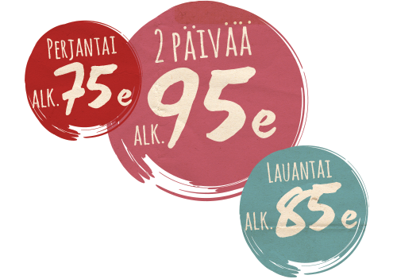

Liput
Qstock 24.–26.7.2014 lipunmyynti on alkanut!

Isac Elliotin Day Before Qstock – konsertti 24.7.2014
Ennakkomyynti: Lippupalvelu ja Arinan Prismat sekä Oulun ja Kempeleen Mick’s -vaateliikkeet.
HUOM! Ostorajoitus 10 lippua/asiakas.
S-etukortilla Arinan Prismoista sekä Oulun ja Kempeleen Mick’s -vaateliikkeistä liput ilman palvelumaksua!
Myyntipisteet
Koko Suomen Lippupalvelun toimipisteet löydät täältä.
Oulun alueen myyntipisteet:
- Prisma Limingantulli, Nuottasaarentie 1 90400 Oulu
- Prisma Linnanmaa, Kauppalinnankuja 1-3 90570 Oulu
- Prisma Raksila, Tehtaankatu 3 90100 Oulu
- Prisma Zeppelin ja Mick’s -vaateliike, Zeppelinintie 1 90450 Kempele
- Musiikki-Kullas, Torikatu 12 90100 Oulu
- Stockmann, Kirkkokatu 14 90100 Oulu
- Mick’s Oulu, Isokatu 24, 90100 Oulu
- Patelan R-kioski, Keskuskatu 7 90800 Oulu
Huom! Oulun ja Kempeleen Mick’s -vaateliikkeissä Qstock-liput myynnissä vain S-etukortilla!
Katso myös Qstock -lippu+majoituspaketit!
Kultuurisetelit:
Smartum liikunta- ja kulttuuriseteli sekä Tyky-Kuntoseteli+(kulttuuriin) käyvät maksuvälineenä Lippupalvelun toimipisteissä. HUOM. Smartum saldo ei käy maksuvälineenä lippukaupoissa.
Ikärajat ja vapaarannekkeet
Qstock-festivaalille 25.-26.7.2014 ei ole ikärajaa. Alle 10-vuotiaat (27.7.2004 ja sen jälkeen syntyneet) pääsevät tapahtumaan veloituksetta.
Alle 10-vuotiaille taataan vapaaranneke festivaalille lipun ostaneen aikuisen seurassa. Lipun ostaneen aikuisen mukana pääsee kaksi alle 10-vuotiasta lasta festivaalialueelle. Vapaarannekkeita saa akkreditointipisteeltä Raatin uimahallin ala-aulasta. Ikä todistettava.
Isac Elliotin Day Before Qstock -konserttiin alle 2-vuotiaat pääsevät tapahtumaan veloituksetta. Lapsen ikä todistettava festivaalialueen porteilla.
Liikuntarajoitteisten avustajaranneke:
Mikäli invaliditeettisi vuoksi tarvitset avustajan, hän voi lunastaa vapaarannekkeensa akkreditointipisteeltä yhdessä avustettavan kanssa. Akkreditointipiste sijaitsee Raatin uimahallin ala-aulassa (Raatintie 2) festivaalialueen välittömässä läheisyydessä ja on avoinna festivaalin aikaan 25.-26.7.2014. Vain yksi avustaja on oikeutettu vapaarannekkeeseen. Avustettavalla tulee olla mukana Qstockin lippu tai jo vaihdettu ranneke.
Akkreditointipisteen aukioloajat:
- Perjantai 25.7.2014 klo 11.30-23.00
- Lauantai 26.7.2014 klo 9.30-21.00
Yli 60-vuotiaitten Enemmän Elämää! -ranneke – Myynti alkaa 2.kesäkuuta!
Qstock ja Liikuntakeskus Hukka yhdistävät voimansa ja tarjoavat yli 60-vuotiaille mahdollisuuden osallistua festivaaleille Enemmän Elämää! -lippukokonaisuuden myötä. Kokonaisuus korvaa aiemman yli 60-vuotiaille tarkoitetun lippukäytännön.
Enemmän Elämää! -paketti 30 euroa sisältäen:
- Qstock 2014 kahden päivän lippu (yli 60-vuotiaille, arvo 95 euroa)
- Liikuntakeskus Hukan päiväajan jäsenyys 12 peräkkäisen päivän ajan (arvo 180 euroa), aktivoitava 31.8.2014 mennessä.
- e-Kaleva kahdeksi viikoksi
Myynti: liikuntakeskus Hukka, Isokatu 99, 90120 Oulu
Huom! Enemmän Elämää! -paketteja rajallinen määrä.
Lipputulot lahjoitetaan lyhentämättöminä oululaisten vähävaraisten nuorten ja lasten harrastustoimintaan. Keräyksen organisoiva ODL ohjaa tuoton avustuskohteisiin. Qstockin Enemmän Elämää! -rannekkeella festivaalialueelle pääsevät sisään vain yli 60-vuotiaat, mutta Enemmän elämää! -lippukokonaisuuden voi ostaa nuorempikin lahjaksi iäkkäämmälle. Ikä tulee todentaa festivaalialueen rannekkeentarkistusporteilla, henkilöllisyystodistus mukaan!
Lue aiheeseen liittyvä uutinen täältä.
Ikäsuositukset
Qstock-festivaali suosittelee alle 15-vuotiaitten festivaalikävijöiden saapumista alueelle aikuisen kanssa. Suuren yleisötapahtuman luonne tekee festivaalin turvallisuudesta kaikkien kävijöiden yhteisen asian, mitä Qstock pyrkii tällä ohjeistuksella edesauttamaan.